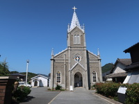 |
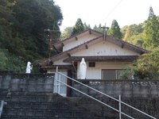 |
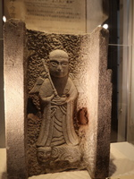 |
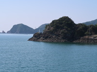 |
| Sakitsu Church | Old Sakitsu Church | Umantera-sama | Maria Statue Over the Ocean |
Sakitsu Village is the part of the World Cultural Heritage as ÅgHidden Christian Sites in the Nagasaki RegionÅh. First we visited there because it seemed to be worth seeing a historical and mysterious area.
The Meiji govern-ment dismissed the prohibition on Christianity and those people come back to Catholic. They build Catholic church.
That time in his area 500 families were Christians among 600 families.
Sakitsu Church was build in 1934 as Gothic style. The old Sakitsu Church next to Sakitsu Suwa Shrine was build in 1885.
In Imatomi village close neighbor Sakitsu, a unique form of worshipping developed here as Christian rituals combined with those of Bud-dhism and Shugendo asceticism. One of symbol was Umantera-sama.
Maria Statue Over the Ocean was built in 1974 was the symbol not only of faith to God but also of pray for the security of the fishing of the fisherman.
The Edo govern-ment issued the ban on Christianity and expelled the missionaries.
Hidden Chris-tians who kept their faith in secret and lived in society with Japanese traditional religions for 250 years.
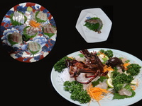 | 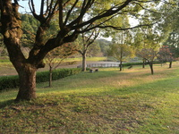 | 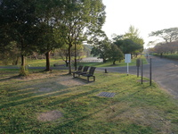 | 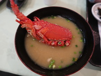 |
| raw fish | Nishinokubo park 1 | Nishinokubo park 2 | Ise-ebi Lobster Miso Soup |
The must of this trip was to enjoy Ise-ebi Lobster. Around this area is well known with a good fishing ground and aquaculture of Japanese Tiger Prawn. After arriving at the hotel we took a short rest then had dinner. We were surprised at the abundant dishes, because various kind of food were set out as 10 dishes. On the first glance it seemed that we couldn't eat all of them, but the taste tempted us to eat up. Of cause Ise-ebi Lobster was absolutely delicious, especially the sashimi.
Next morning a hotel staff guided us to Nishinokubo park as a morning walk. Taking a walk, we got many explanation about trees and the nature. Enough had been refreshed on a walk.
After taking a walk we ate Ise-ebi Lobster Miso Soup, this is what we really wanted to. No doubt I was satisfied at the taste.
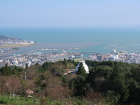 | 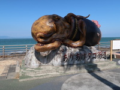 | 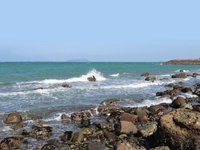 | 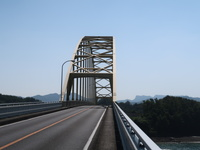 |
| Jyuman Mountain Observation | Octopus Monument | a Ocean View | Oyano Bridge |
It was time we started to home. Any way we left the hotel to Jyuman Mountain Observation. Although on the way we lost our way a bit, at last the landscape from the observatory delighted our eyes.
Dropping in Octopus Road Station Ariake Ripple Land we took a rest.
Just under the road station by shore there was the unique monument of octpus.
Driving and looking at, the scenery of the sea and islands was very beautiful.
Five bridges which were famous for connecting islands has some different type construction. This is one of them, the second bridge called Oyano Bridge with Trussed Langer style.
Those two days, during the trip, it was so fine taht we enjoyed excellent food and nice scenery in Amakusa.
Thanks to the campaign.
{kind=link}
{kind=link}
{kind=link}
{kind=link}
{kind=link}
{kind=link}
{kind=link}
{kind=link}
{kind=link}
{kind=link}
{kind=link}
{kind=link}